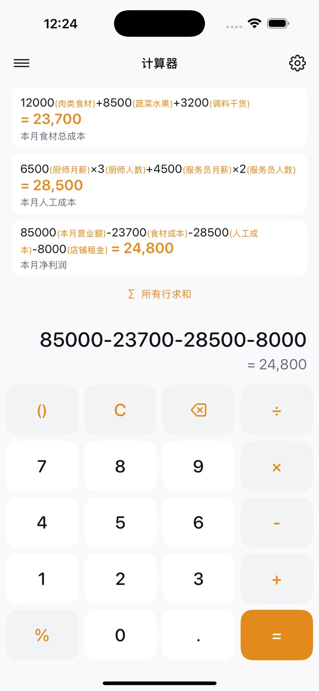

采购清单 · 计算示例
收纳盒 · 单价 × 数量48 × 3 = 144
标签纸 · 单价 × 数量25 × 2 = 50
运费12
合计206
示例金额为元。三项费用互不重复，合计 206 元。
iPhone 与 iPad 上的计算器
给数字写备注，保存完整的计算过程，再把多笔结果一键汇总。欧米计算器让采购、报价和日常算账都有据可查。
免费 · iOS / iPadOS 17.0 或更高版本 · 中文 / English

为单价、数量和运费写上说明，也可以给整条算式添加备注。
按不同用途保存计算页，回看历史，搜索备注，继续修改已有计算。
把同一份清单的各项费用分开计算，再汇总当前页的结果。
示例金额为元。三项费用互不重复，合计 206 元。
保留每项商品的单价、数量和备注，核对一份清单的总费用。
把材料、人工和运费分项计算；项目变化时，回到原记录继续修改。
记录进货成本和售出金额，让每一步差额计算都能回头检查。
可以。数字和整条算式都能添加备注，适合解释单价、数量、折扣和运费的含义。
可以保存计算页，按标题和备注搜索历史记录，并载入已有记录继续计算。
可以。基础计算、备注和本地记录可离线使用；主动提交反馈等网络功能需要连接互联网。
支持加减乘除、括号、百分比和输入时预览结果，可以设置小数位数、千位分隔符和键盘配色。
当前正式版本的算式、结果和备注保存在设备本地。使用统计及主动提交的反馈，按隐私政策中说明的范围处理。
从一份有备注的计算记录开始。